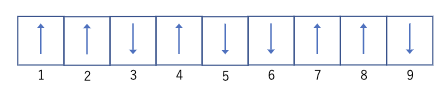

統計力学
\(\require{physics}\)
概要
原子の振動のことをフォノンと呼んでいる．
温度を上げる→フォノンの数が増えていく→電気抵抗が上がる．
金属と半導体では上の振る舞いが逆になる．
統計力学の目標は，多体系の解析と，熱力学の復習．
統計学における様々な過程や原理
アンサンブル とは，巨視的に同じ条件下にある力学的に同じ系を無数に集めた仮想的な集団のことである
エルゴード仮説 とは，平衡状態にある物理量の時間積分の平均は，ある時刻における多数の測定値の平均である，アンサンブル平均は一致するという仮定である．
| 集団名 | 状態 | 重要な変数 | 大事なエネルギー |
|---|---|---|---|
| ミクロカノニカルアンサンブル | 孤立系 | 状態数\(W\) | \(S=k_b\ln W\) |
| カノニカルアンサンブル | 閉鎖系 | 分配関数\(Z\) | ヘルムホルツエネルギー\(F=-\frac{1}{\beta}\ln Z\) |
| グランドカノニカルアンサンブル | 自由系 | 大分配関数\(\Xi\) | 大分散エネルギー\(J=-\frac{1}{\beta}\ln \Xi\) |
ただし，\(\beta=\frac{1}{k_BT}\)
等重率の原理 とは，\(N,V,E\) で指定された巨視状態に対応するどの微視的状態をとっても，それがアンサンブル中に現れる確率は等しいという原理．
磁気モーメントの略記法

上のような状態のことを次のように書く．
\[\uparrow_1 \uparrow_2 \downarrow_3 \uparrow_4 \downarrow_5 \downarrow_6 \uparrow_7 \uparrow_8 \downarrow_9\]
矢印に対しては単純な乗算を定義できる．また次の式を母関数と呼ぶ
\[\prod_i(\uparrow_i + \downarrow_i)\]
この値の数え上げ，つまり状態の数は\(2^N\)ある．
Check Point
統計力学とは？
エントロピーなどの状態量にミクロな視点からの定義を行い，状態量の関係である状態方程式をミクロな視点から導出する学問
エルゴード仮説とは？
平衡状態にある物理量の時間積分の平均は，ある時刻におけるアンサンブル平均は一致する
等重率の原理とは？
\(N,V,E\) で指定された巨視状態に対応するどの微視的状態をとっても，それがアンサンブル中に現れる確率は等しいという原理．
もっと詳しく書くと，孤立系において許されるどの量子状態も同様に確からしいという話．
式に起こしてみると，孤立系において\(W\)種類だけ存在する状態\(s\)となる確率\(P(s)\)には次のような式となる．
\[P(s)=\frac{1}{w}\] \[\sum_s P(s)=1\]
ある物理量\(\ev{X}\)は次のような式で表される
\[\ev{X}=\sum_s X(s)P(s)=\sum_s X(s)\frac{1}{W}\]
例題
各系が磁気モーメント\(2s=1\)をもつ，5個の磁石からなる孤立系を表現するアンサンブルを構成する場合について考える．
\[W(5,\frac{1}{2})=\frac{5!}{(\frac{5}{2}-\frac{1}{2})!(\frac{5}{2}+\frac{1}{2})!}=10\]
二つのスピン系
\[W(N,\mathfrak{S})=\sum_{-\frac{N_1}{2}}^{\frac{N_1}{1}}W_1(N_1,\mathfrak{S_1})W_2(N_2,\mathfrak{S-S_1})\]
\(W\)は\(\mathfrak{S_1}\)が最大の時に鋭いピークを持っている．
\[W_1W_2=W_1(0)W_2(0)\exp(-\frac{2s_1^2}{N_1}-\frac{2(s-s_1)^2}{N_2})\]
\[\pdv{s_1}\ln(W_1W_2)=-\frac{4s_1}{N_1}+\frac{4(s-s_1)}{N_2}=0\]
\[\frac{s_1}{N_1}=\frac{s_2}{N_2}=\frac{s}{N}\]
ピーク時の割合は上のようになる．以上の議論を\(s\)ではなく，\(U\)について行うこともできる．
熱平衡
熱平衡では\(\dd W=0\)という最も確からしい状態でかつ\(\dd U = \dd U_1+\dd U_2=0\)が成り立っている状態である．
\[\dd U =\pdv{W_1}{U_1}W_2\dd U_1+\pdv{W_2}{U_2}W_1\dd U_2=0\]
\[\pdv{\ln W_1}{U_1}_{N_1}=\pdv{\ln W_2}{U_2}_{N_2}\]
ここでエントロピーの定義から
\[\pdv{S_1}{U_1}_{N_1}=\pdv{S_2}{U_2}_{N_2}\]
またこれで温度を定義する．
\[\frac{1}{T}=\pdv{S}{U}_N\]
調和振動子の多重度関数
調和振動子の全エネルギー合計が\(n\hbar \omega\)の時，\(\sum_{1}^{N} s_i=n\)が成り立っているので，
\[W=\frac{(n+N-1)}{n!(N-1)!}\]
という式で表される．
演習問題01
振動数\(\omega\)の\(N\)個の調和振動子が以下のエネルギー\(U\)をもつ
\[U=\frac{N}{2}\hbar \omega +n\hbar \omega\]
この系の多重度関数と温度とエネルギー(温度の関数)を求めよ．
解答
\[W=\frac{(n+N-1)}{n!(N-1)!}\]
\[\frac{1}{T}=\pdv{S}{U}=\pdv{S}{n}\pdv{n}{U}=\frac{k_B}{\hbar \omega}\ln\frac{N+n}{n}\]
エネルギーの定義式から
\[n=\frac{U}{\hbar \omega}-\frac{N}{2}\]
\[\frac{U+n\hbar\omega/2}{U-n\hbar\omega/2}=\exp (\frac{\hbar \omega}{k_B T})\]
\[U=n\left(\frac{\hbar\omega}{2}+\frac{\hbar \omega}{\exp(\frac{\hbar\omega}{k_BT})-1}\right)\]
演習問題02
\(N\)個の独立な粒子から成る系がある．おのおのの粒子は，\(-\epsilon_0,\epsilon_0\)の2つのエネルギー状態しかとりえないとする．全エネルギー\(U=M\epsilon\:(M=-N~N)\)の状態の多重度関数\(W(N,M)\)を求め，ミクロカノニカル集団の考えにより，\(U<0\)の範囲に限ってこの系のエネルギーと温度の関係を求めよ．
解答
\(\pm\epsilon\)のエネルギーを取る粒子の数を\(N_{\pm}\)とかく．そうした時
\[\begin{align*} M&=N_+-N_-\\ N&=N_++n_- \end{align*}\]
となるので，
\[W=\frac{N!}{N_+!N_-!}=\frac{N!}{(\frac{N-M}{2})!(\frac{N+M}{2})!}\]
\[\begin{aligned} & S=k_B \log W(N, M)=k_B \log \frac{N !}{\left[\frac{1}{2}(N-M)\right] !\left[\frac{1}{2}(N+M)\right] !} \\ & \approx k_B\left\{N \log N-\frac{1}{2}(N-M) \log \frac{N-M}{2}+\frac{1}{2}(N+M) \log \frac{N+M}{2}\right\} \\ & \frac{1}{T}=\frac{\partial S}{\partial U}=\frac{\partial S}{\partial M} \cdot \frac{\partial M}{\partial U}=\frac{1}{2} \frac{k_B}{\varepsilon_0} \log \frac{N-M}{N+M} \\ & \frac{N-M}{N+M}=\frac{N_{-}}{N_{+}}=\exp \left(\frac{2 \varepsilon_0}{k_B T}\right) \end{aligned}\]
ここで\(M>0\)というのは，より高いのエネルギーの状態にある状態にある粒子が，より低いエネルギーの状態にある粒子より多いという，熱平衡ではありえない状態なので，\(M<0\)だけを考える．
\[M=-N\tanh \frac{\epsilon_0}{k_BT}\]
となるので，
\[U=M\epsilon_0=-N\epsilon_0\tanh \frac{\epsilon_0}{k_BT}\]
演習問題03
\(n\)個の要素から成る鎖が1次元的に相連なっている．それぞれの要素の長さを\(a\)とし，鎖の両端の距離を\(x\)とする．\(x\)の関数としてこの鎖のエントロピーを求めよ
解答
長さが与えられているので，該当の長さを達成する要素の向きの数を右向き\(n_+\)左むき\(n_-\)とする．この時次の式が成り立つ
\[x=(n_+-n_-)a,\;n=n_++n_-\]
\[ \begin{align*} S&\approx k_B\left\{ n\ln n - \frac{na+x}{2a}\ln \frac{na+x}{2a} - \frac{na-x}{2a}\ln\frac{na-x}{2a} \right\}\\ &=nk_B\left\{ \ln n - \frac{1}{2}\left(1+\frac{x}{na}\right)\ln \frac{n}{2}\left(1+\frac{x}{na}\right)-\frac{1}{2}\left(1-\frac{x}{na}\right)\ln \frac{n}{2}\left(1-\frac{x}{na}\right)\right\}\\ &=nk_B\left\{\ln 2 - \frac{1}{2}\left(1+\frac{x}{na}\right)\left(1+\frac{x}{na}\right)-\frac{1}{2}\left(1-\frac{x}{na}\right)\left(1-\frac{x}{na}\right)\right\} \end{align*} \]
金属中の平衡空孔濃度について考える．金属は結晶格子を形成しているが，すべての格子点に原子が存在するのではなく，ある割合で空孔が形成される．原子の数を\(N\)，空孔の数を\(n\)とし，全部で\(N+n\)の格子点があると考える．空孔を形成するとエネルギーは上昇するので，1つの空孔が形成されるために必要なエネルギーを\(\epsilon\)とする．空孔は互いに相互作用しないと仮定する．ある温度\(T\)における平衡空孔濃度\(n/N\)を求めよ
解答
\[S\approx k_B\{(n+N\ln (n+N)-n\ln n - N\ln N)\}\]
\[\frac{1}{T}=k_B\ln\frac{n+N}{n}\frac{1}{\epsilon}\]
\[1+\frac{N}{n}=\exp (\frac{\epsilon}{k_BT})\]
\[\frac{n}{N}=\frac{1}{\exp (\frac{\epsilon}{k_BT})-1}\]